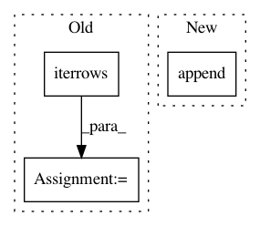

b34a1085165933fcffc6d863c2f7274b87bd2b09,qanta/reranker/svm.py,Reranker,create_train,#Any#Any#Any#,100
Before Change
def create_train(example_generator, questions, guesses):
data = dlib.sparse_ranking_pair()
for row, gg in guesses.iterrows():
guess = gg["guess"]
answer = questions[gg["qnum"]].page
text = questions[gg["qnum"]].get_text(gg["sentence"],
gg["token"])
if guess == answer:
data.relevant.append(example_generator(text, gg[1]))
else:
data.nonrelevant.append(example_generator(text, gg[1]))
return data
def train_svm(data, c_val=10):
trainer = dlib.svm_rank_trainer()
After Change
if ex.new:
if num_examples > 0 and has_correct:
queries.append(data)
data = dlib.sparse_ranking_pair()
has_correct = False
In pattern: SUPERPATTERN
Frequency: 3
Non-data size: 3
Instances
Project Name: Pinafore/qb
Commit Name: b34a1085165933fcffc6d863c2f7274b87bd2b09
Time: 2017-06-01
Author: jordanbg@gmail.com
File Name: qanta/reranker/svm.py
Class Name: Reranker
Method Name: create_train
Project Name: soft-matter/trackpy
Commit Name: 31e3e6f4ca28d0606559b326f4ff2920fa968149
Time: 2020-03-18
Author: ruben@lighthacking.nl
File Name: trackpy/locate_functions/brightfield_ring.py
Class Name:
Method Name: locate_brightfield_ring
Project Name: nilmtk/nilmtk
Commit Name: 5641405989025614d4654f752f37dbf66c548da5
Time: 2014-05-05
Author: jack-list@xlk.org.uk
File Name: nilmtk/pipeline/results.py
Class Name: Results
Method Name: update